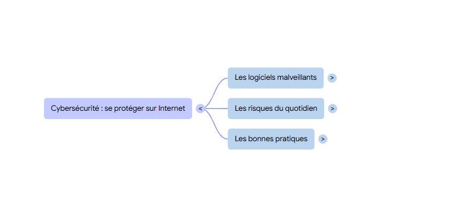

Création de contenu numérique
Pour toutes mes productions, j'ai choisi un seul sujet : la sécurité sur Internet. J'ai donné ma page Cybersécurité comme source à NotebookLM, qui a créé un résumé, un podcast, une carte mentale et une vidéo.
1. Résumé – NotebookLM
Mon prompt : « Fais un résumé de 120 mots en français, simple et clair, pour une étudiante de 1re année. »
La cybersécurité protège l'ensemble de vos appareils et vos données numériques contre diverses menaces. Sur Internet, les logiciels malveillants comme les virus, rançongiciels ou logiciels espions peuvent bloquer ou voler vos informations personnelles. Au quotidien, les cyberattaquants utilisent l'hameçonnage par faux e-mails ou SMS afin de dérober vos mots de passe et accès bancaires.
Pour naviguer sereinement en ligne, adoptez des réflexes simples et efficaces :
- Utilisez des mots de passe forts et uniques pour chaque compte.
- Activez systématiquement l'authentification à deux facteurs.
- Effectuez sans tarder les mises à jour du système et de l'antivirus.
- Restez vigilant face aux liens suspects et évitez le Wi-Fi public pour vos opérations sensibles.
- Réalisez des sauvegardes régulières de vos fichiers importants.
J'ai corrigé une petite faute (« l'hameçonnage ») et retiré la dernière phrase, qui me proposait un quiz.
2. Podcast – NotebookLM
NotebookLM a transformé ma page en podcast : deux voix d'IA discutent en français de la sécurité sur Internet.
3. Carte mentale – NotebookLM
La carte mentale organise les idées principales de ma page : les logiciels malveillants, les risques du quotidien et les bonnes pratiques.

4. Vidéo courte – NotebookLM
Une courte vidéo explicative créée par NotebookLM à partir de ma page Cybersécurité.
5. Présentation – 6 diapositives
Une présentation sur la sécurité sur Internet : les logiciels malveillants, les risques du quotidien, comment reconnaître un e-mail d'hameçonnage, et les bonnes pratiques.
Transparence IA
Outils utilisés : NotebookLM, Claude.
Rôle de l'IA : NotebookLM a créé le résumé, le podcast, la carte mentale et la vidéo à partir de ma page Cybersécurité. Claude a préparé les diapositives de la présentation et m'a guidée pour utiliser NotebookLM.
Ce que j'ai fait moi-même : j'ai choisi le sujet, j'ai donné ma page comme source à NotebookLM, j'ai écrit le prompt du résumé, j'ai lancé chaque production, j'ai vérifié que le contenu est juste et j'ai mis les productions sur cette page.
Sources vérifiées : ma page Cybersécurité et ses sources officielles.